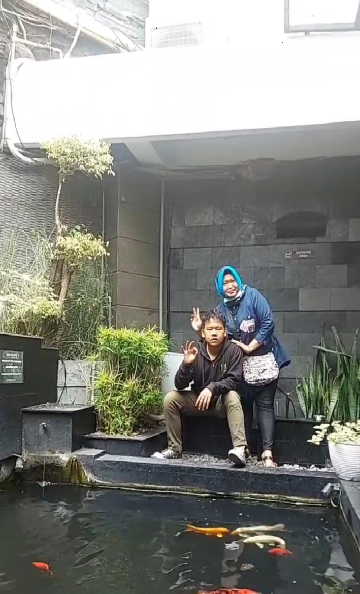
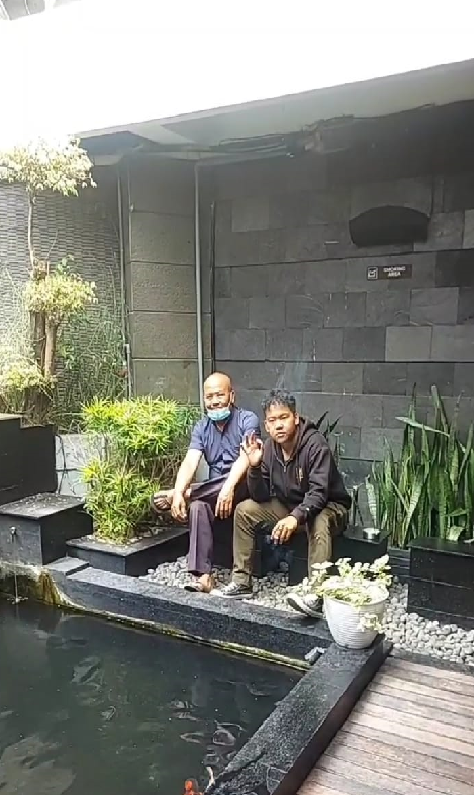

Sedikit bercerita tentang diri sendiri, Kadang waqyu suka bingung kenapa dikasih nama waqyu? apa artinya waqyu?. Tapi pemberian tetaplah pemberian yang sudah seharusnya disyukuri dan diterima bukan?. Yah begitulah, sekarang waqyu aktif berorganisasi di DEMA-F dan kerja juga lohhh. IT Support di CV Dian Global Tech, cape dan melelahkan tapi yaaaaaa. Tetep dijalanin aja lah yaaaaa. Karena inilah jalan yang telah diberi oleh Tuhan, ciapa lagi kalau bukan Allah. Waqyu sendiri memiliki hobi Membaca, waw tercengang bukan lalu ngoding dan mendengarkan lagu.


×

SHOPEE PAYYYY!!!!!!
